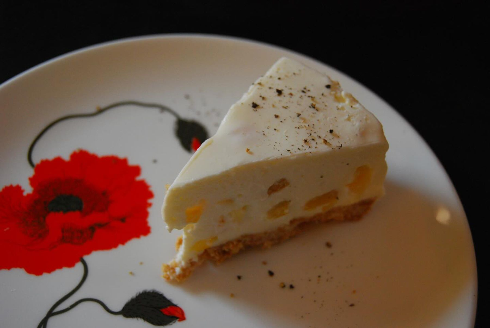
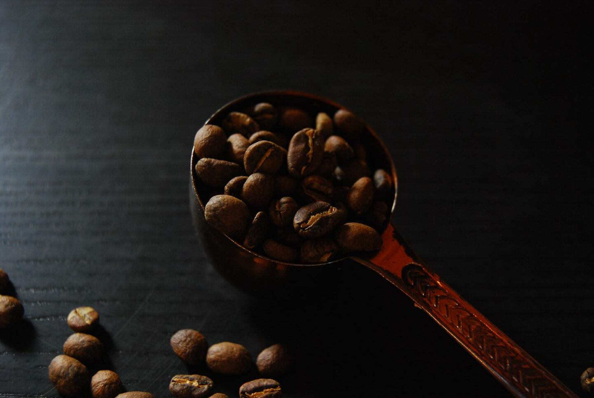

チーズケーキ
しっとりなめらかな自家製チーズケーキ。日替わりのケーキの一つです。
SELF-ROAST COFFEE — HONKAWAGOE
静かな朝の、自家焙煎。
本川越駅ちかく、隠れ家のような喫茶店。
7:30–18:00｜木曜定休
ABOUT
本川越駅へ向かう通り沿い、入口は少し奥まって、控えめにOPENの札。見つけた人がほっとする、隠れ家のような自家焙煎コーヒーの喫茶店です。
店主がひとりで焙煎する珈琲は、2025年のコンペ（ECRC・washed部門）で金賞を受賞。「入った瞬間、暗めで静か」——落ち着いた空気の中で、朝のモーニングから日替わりのケーキやプリンまで、ゆっくりの時間が流れます。

近くのモーニングを、探す楽しみ。
SHOP INFO
| 店名 | Tomarigi coffee（トマリギコーヒー） |
|---|---|
| 住所 | 埼玉県川越市新富町1-6-2 1F |
| アクセス | 本川越駅 徒歩約4分 |
| 営業時間 | 7:30–18:00 |
| 定休日 | 木曜 |
| 電話 | 090-4751-6813 |